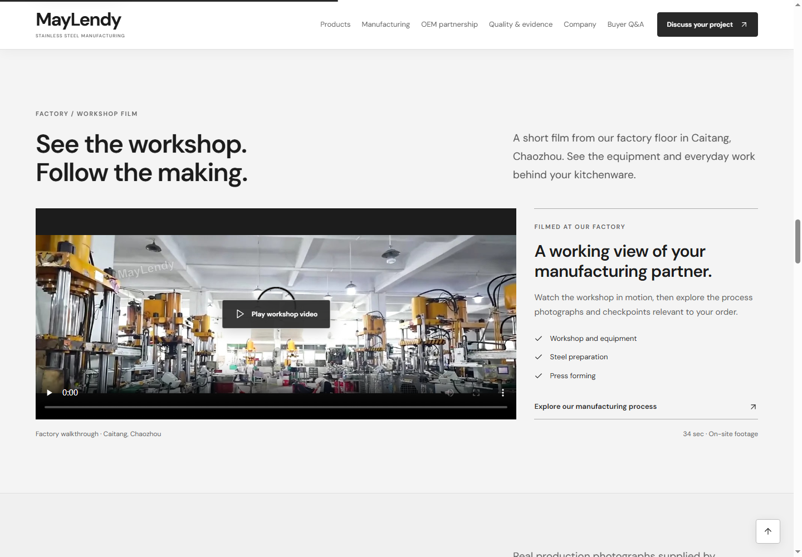

从0增长，准确停在终值
产能、面积和团队规模共17处，约1秒完成；千位分隔、m²及“+”保留。产品规格、MOQ和交期等固定值不参与动画。
产能、面积和团队数字首次进入视区时约1秒增长到最终值；视频上下沿与右侧横线对齐。标题、引导文、重点能力和链接反馈同步加强。

产能、面积和团队规模共17处，约1秒完成；千位分隔、m²及“+”保留。产品规格、MOQ和交期等固定值不参与动画。
左侧视频容器与右侧上下横线精确对齐，字幕独立在下方。保持完整画幅和三处水印；手机播放按钮避开原生控件。
加重主标题、放大引导文字、强调制造地和OEM能力；链接卡片的标题、箭头与键盘焦点提供更明确的操作反馈。
三篇英文指南有比较表和采购检查项。入口放在Explore the range的All models & specifications下方。
采用指定的参考数值，清楚标注为准时交付目标与产品缺陷率目标。原有生产交期、人工检验、产能和进度反馈继续保留。
公司描述与结构化数据已统一。核心52型号、67组件、27问答保持静态可读；59张目录卡可搜索、比较和咨询。
打开首页并向下滚动到600,000／800,000等数字。首次进入视区播放，离屏暂停、回来续播，完成后不会反复跳动。刷新页面可以重新体验。
系统开启“减少动态效果”时直接显示最终数字；静态HTML、读屏和打印也保留完整数值。
26项数字、25项视频、115组布局、56项交互、19项双层展示及55项静态检查通过。产品数据和视频文件不变，2,019个沙箱外受保护文件未改动。
本轮仍是本地预览，没有部署或发送询盘。